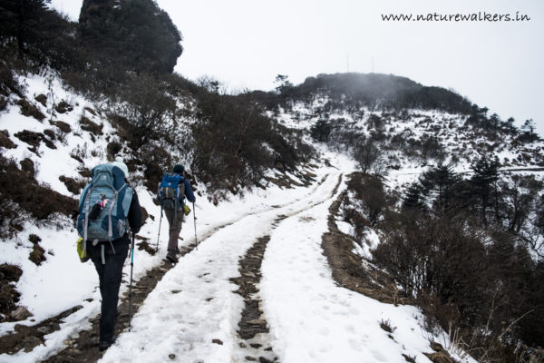
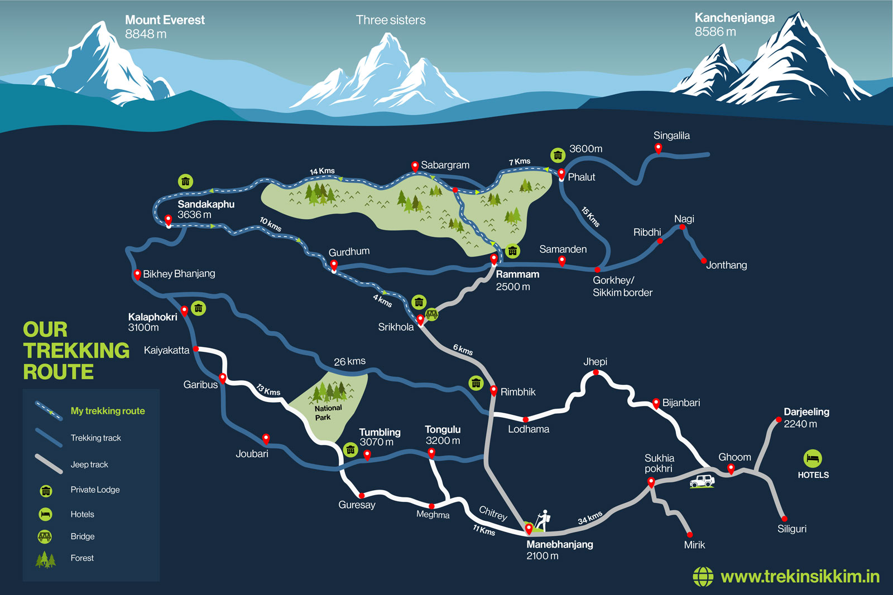

Sandakphu



Sandakphu, located in the Eastern Himalayas, is renowned for offering stunning views of the world's highest peaks including Mount Everest and Kanchenjunga. It is the highest point in the state of West Bengal and offers a challenging yet rewarding trekking experience.
The trek to Sandakphu starts from Manebhanjan, a small town near Darjeeling. It takes about 3-4 days to reach Sandakphu, passing through lush forests of rhododendrons and magnolias, picturesque villages, and rugged terrains. Trekkers can witness diverse flora and fauna along the way, including rare species like the Red Panda.
The highlight of Sandakphu trek is reaching the summit, where one can enjoy panoramic views of snow-capped peaks stretching across Nepal, Sikkim, Tibet, and Bhutan. The trek also offers insights into local Sherpa culture and hospitality as trekkers stay in tea houses and lodges along the route.
 Maplinked